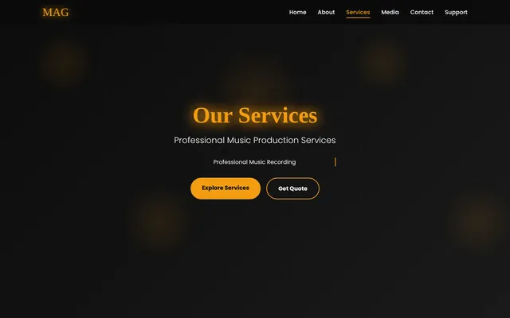
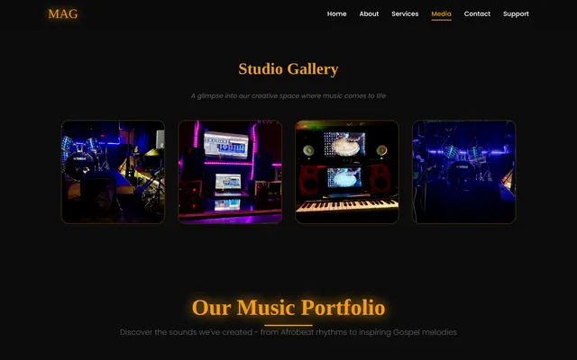

Websites
Macreamy Anthony Studios
A studio website that sounds like the studio.
Live
A responsive business website for Macreamy Studios, the recording studio of Macreamy Anthony Studios in Awka, Anambra. It presents the studio, its services and its media, and it is live at macreamystudios.com.

- Type
- Client business website
- Built with
- HTML, CSS, JavaScript, GSAP
- Live at
- macreamystudios.com
- My role
- Design and development
The brief
A recording studio sells a feeling before it sells hours in a booth. The site had to look as polished as the music, explain what the studio offers and make it easy to get in touch.
What the live site covers
- A home page with the studio name, a one line promise and two clear calls to action
- Services: professional recording, music production, mixing and mastering, session musicians, audio post production and music lessons
- A media page with a studio gallery and the studio's music
- About, contact and support pages with email, phone and the studio's location
Design and build
A dark stage with warm accents and soft glows, like studio lights in a dim room. I built it with semantic HTML, responsive CSS and JavaScript, with GSAP for the motion so headings and sections arrive smoothly without slowing the page down.
Stack
- HTML
- CSS
- JavaScript
- GSAP
- Responsive design
Screens
Captured from an earlier build in the site's GitHub repository, which used the macAnthony Global name. The live site now carries the Macreamy Studios name.
- Home

Services
Media and studio gallery


Status
Completed and live at macreamystudios.com. I checked it on 14 November 2026.